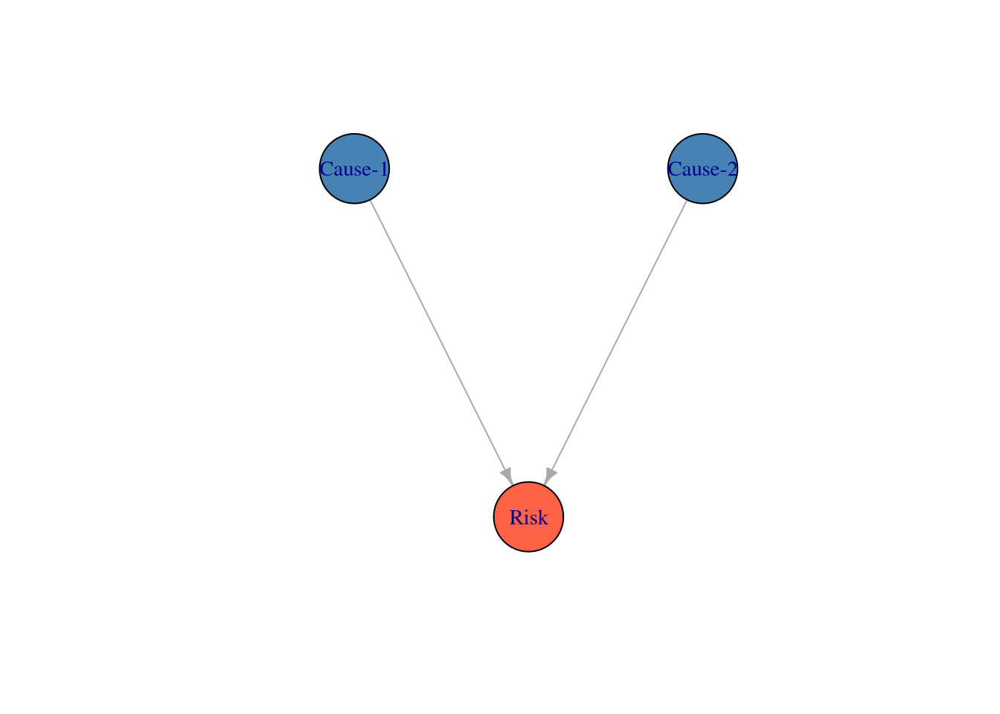
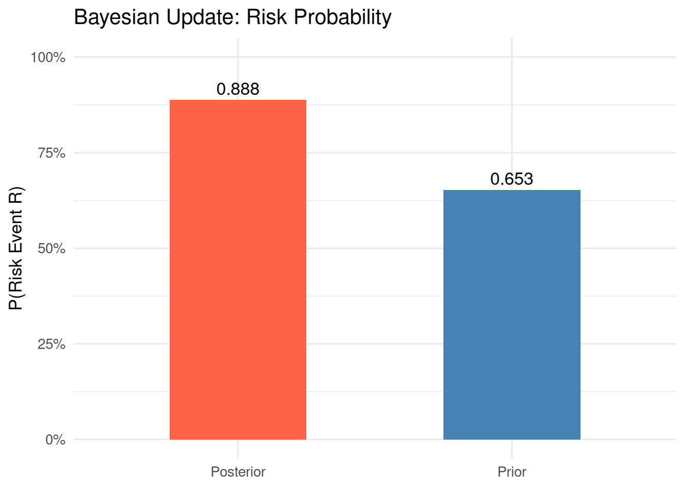
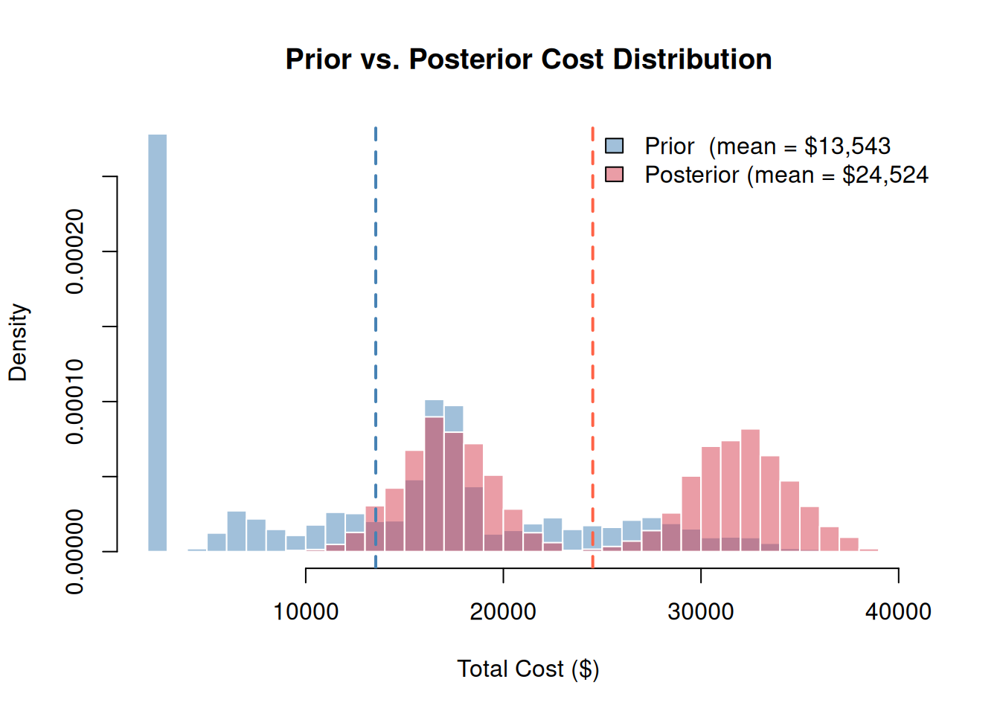

library(PRA)
set.seed(42)6 I Had a Feeling: Bayesian Risk Inference
“When the facts change, I change my mind. What do you do, sir?” — Attributed to John Maynard Keynes
Here is the situation: you have a risk assessment based on historical data and expert judgment. Then something happens on site — a root cause you were watching turns out to be present, or a supplier sends a warning signal. Your prior assessment is now out of date. Do you stick with the original numbers, or update them?
Bayesian inference gives you the formal machinery to update. Not because it feels right, but because it is the mathematically correct way to incorporate new evidence.
6.1 The Core Idea
NoteBayes’ Theorem in Plain English
\[P(H \mid E) = \frac{P(E \mid H) \cdot P(H)}{P(E)}\]
In plain English: Your updated belief (posterior) equals your initial belief (prior) multiplied by how well the evidence fits that belief, normalized to sum to 1.
In project risk terms:
- Prior \(P(H)\): Your initial estimate of risk probability — before any field observations
- Likelihood \(P(E \mid H)\): How likely is the observed evidence if the risk/cause is present?
- Posterior \(P(H \mid E)\): Your updated estimate after incorporating the evidence
Observing a root cause always moves the posterior. The direction and magnitude depend on how strongly that cause is linked to the risk event.
Bayes’ theorem states:
\[P(H \mid E) = \frac{P(E \mid H) \cdot P(H)}{P(E)}\]
In English: the probability of your hypothesis (\(H\)) given new evidence (\(E\)) equals the likelihood of seeing that evidence if the hypothesis were true, times your prior probability, divided by the total probability of the evidence. The result is the posterior probability — your updated belief.
In project risk terms:
- Prior: Your initial estimate of risk probability before any field observations
- Evidence: Observations about root causes (is the labor market tight? is weather bad?)
- Posterior: Your updated estimate after incorporating those observations
The PRA package provides four Bayesian functions organized into two stages:
| Stage | Function | Purpose |
|---|---|---|
| Prior | risk_prob() |
Compute risk probability from root causes (no observations yet) |
| Prior | cost_pdf() |
Sample prior cost distribution based on risk probabilities |
| Posterior | risk_post_prob() |
Update risk probability after observing cause status |
| Posterior | cost_post_pdf() |
Sample posterior cost distribution based on observed risks |
6.2 Causal Structure
Before computing probabilities, it helps to see the causal graph. Two independent root causes each point to the risk event — observing either one updates the posterior risk probability.
library(igraph)
g <- graph_from_data_frame(
data.frame(from = c("Cause-1", "Cause-2"), to = c("Risk", "Risk")),
directed = TRUE
)
V(g)$color <- c("steelblue", "steelblue", "tomato")
plot(g, vertex.size = 40, vertex.label.cex = 0.9,
edge.arrow.size = 0.6, layout = layout_with_sugiyama(g)$layout)
6.3 Step 1: Prior Risk Probability
Before any observations are made, risk_prob() computes the probability of a risk event R occurring given two potential root causes. For each cause, we supply:
cause_probs— prior probability that the cause is presentrisks_given_causes— P(R | cause present)risks_given_not_causes— P(R | cause absent)
cause_probs <- c(0.3, 0.2)
risks_given_causes <- c(0.8, 0.6)
risks_given_not_causes <- c(0.2, 0.4)prior_risk <- risk_prob(cause_probs, risks_given_causes, risks_given_not_causes)
cat("Prior probability of risk event R:", round(prior_risk, 3), "\n")Prior probability of risk event R: 0.82 This is your starting point — an estimate of how likely the risk event is before you’ve looked at anything on site.
6.4 Step 2: Prior Cost Distribution
Given the prior risk probabilities, cost_pdf() samples the cost distribution before any field observations. Three independent risk events can each contribute cost if they occur.
risk_probs <- c(0.3, 0.5, 0.2)
means_given_risks <- c(10000, 15000, 5000)
sds_given_risks <- c(2000, 1000, 1000)
base_cost <- 2000prior_samples <- cost_pdf(
num_sims = 5000,
risk_probs = risk_probs,
means_given_risks = means_given_risks,
sds_given_risks = sds_given_risks,
base_cost = base_cost
)We’ll compare this prior distribution to the posterior in Step 4.
6.5 Step 3: Posterior Risk Probability (Bayesian Update)
After inspecting the project site, we observe that Cause 1 is present (= 1). Cause 2 has not yet been assessed (= NA). risk_post_prob() updates the risk probability using only the available evidence — NA causes are treated as unobserved and do not contribute to the update.
observed_causes <- c(1, NA) # C1 observed as present; C2 not yet assessedposterior_risk <- risk_post_prob(
cause_probs, risks_given_causes,
risks_given_not_causes, observed_causes
)
cat("Posterior probability of risk event R:", round(posterior_risk, 3), "\n")Posterior probability of risk event R: 0.632 Observing Cause 1 (which has a strong link to R) raises the risk probability substantially. The NA for Cause 2 is simply ignored — only confirmed observations drive the update.
6.5.1 Prior vs. Posterior Probability
prob_data <- data.frame(
Stage = c("Prior", "Posterior"),
Probability = c(prior_risk, posterior_risk)
)
p <- ggplot2::ggplot(prob_data, ggplot2::aes(x = Stage, y = Probability, fill = Stage)) +
ggplot2::geom_col(width = 0.5, show.legend = FALSE) +
ggplot2::geom_text(ggplot2::aes(label = round(Probability, 3)),
vjust = -0.4, size = 4.5
) +
ggplot2::scale_fill_manual(values = c("Prior" = "steelblue", "Posterior" = "tomato")) +
ggplot2::scale_y_continuous(limits = c(0, 1), labels = scales::percent) +
ggplot2::labs(
title = "Bayesian Update: Risk Probability",
x = NULL, y = "P(Risk Event R)"
) +
ggplot2::theme_minimal(base_size = 13)
print(p)
6.6 Step 4: Posterior Cost Distribution
Now that we know Cause 1 is present (Risk 1 occurs), and one risk remains unobserved (Risk 2 = NA), cost_post_pdf() samples the posterior cost distribution. Observed risks that occurred (= 1) add their cost; unobserved risks (= NA) are excluded from the simulation.
observed_risks <- c(1, NA, 1) # Risk 1 and 3 confirmed; Risk 2 not yet assessedposterior_samples <- cost_post_pdf(
num_sims = 5000,
observed_risks = observed_risks,
means_given_risks = means_given_risks,
sds_given_risks = sds_given_risks,
base_cost = base_cost
)6.6.1 Prior vs. Posterior Cost Distribution
Plotting both distributions on the same axes shows how the evidence shifts the cost estimate:
xlim_range <- range(c(prior_samples, posterior_samples))
hist(prior_samples,
breaks = 40, freq = FALSE,
col = rgb(0.27, 0.51, 0.71, 0.5),
border = "white",
xlim = xlim_range,
main = "Prior vs. Posterior Cost Distribution",
xlab = "Total Cost ($)", ylab = "Density"
)
hist(posterior_samples,
breaks = 40, freq = FALSE,
col = rgb(0.84, 0.24, 0.31, 0.5),
border = "white",
add = TRUE
)
abline(v = mean(prior_samples), col = "steelblue", lty = 2, lwd = 2)
abline(v = mean(posterior_samples), col = "tomato", lty = 2, lwd = 2)
legend("topright",
legend = c(
paste0("Prior (mean = $", format(round(mean(prior_samples)), big.mark = ",")),
paste0("Posterior (mean = $", format(round(mean(posterior_samples)), big.mark = ","))
),
fill = c(rgb(0.27, 0.51, 0.71, 0.5), rgb(0.84, 0.24, 0.31, 0.5)),
bty = "n"
)
Interpretation: The posterior distribution is narrower and shifted upward — observing which risks materialized eliminates uncertainty about some cost components while raising the estimated exposure from confirmed events. The remaining spread reflects uncertainty from the unobserved risk and cost variability in the confirmed ones.
6.7 Summary
The Bayesian workflow in PRA follows a natural before-and-after structure:
- Before observations — use
risk_prob()andcost_pdf()to characterize the risk landscape. - As evidence arrives — use
risk_post_prob()andcost_post_pdf()to update estimates. - NA values represent causes/risks not yet assessed — they are correctly excluded from the update.
This approach is particularly powerful in phased projects where information about risk drivers becomes available progressively, allowing cost forecasts to be refined at each stage.
6.8 Summary
For risks that propagate through a network of shared resources and tasks, Chapter 9 extends these ideas into a full probabilistic graph where Bayesian conditioning and structural dependencies interact.
6.9 Exercises
Prior vs. posterior. In plain English, what is the difference between a prior probability and a posterior probability? Give a project example where each would be used.
Change the observation. Re-run Step 3 with Cause 2 observed as present (= 1) instead of Cause 1. How does the posterior change compared to when Cause 1 was observed? Why?
Both causes observed. What happens if you observe both causes as present (= 1, = 1)? Compute the posterior. What is the maximum possible posterior probability given the model parameters?
Intuition check. ★ Explain in plain English why observing one root cause changes your belief about the risk event, even though we didn’t observe the risk event itself. What is the role of the conditional probabilities
risks_given_causesin this reasoning?Sequential updating. ★ Start with the prior. Observe Cause 1. Update. Then observe Cause 2. Update again. Does it matter what order you observe the causes? Should it? (Hint: think about whether the causes are assumed independent in this model.)